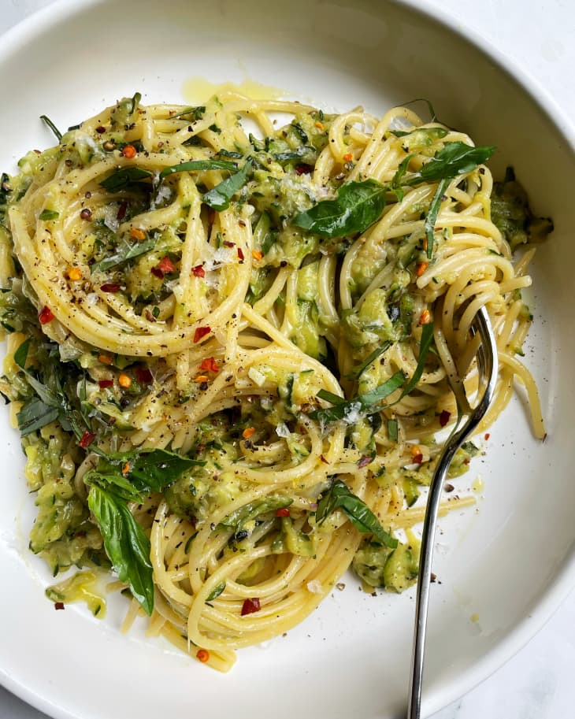

Zucchini Butter Pasta

Description
An ultra-simple recipe that's great for using up extra zucchini from the garden!
The zucchini is cooked down in garlic and butter until it reaches an almost jam-like consistency. Just toss in pasta, parmesan, and fresh basil for an amazing summer meal.
Ingredients
- butter
- garlic
- zucchini
- tomatoes (optional)
- pasta of your choice (spaghetti or linguini recommended!)
- parmesan
- basil
- red pepper flakes
Steps
- melt butter
- add garlic and cook until fragrant
- add tomatoes if using
- add coarsely grated zucchini and cook until it releases all of its water, the water evaporates, and the zucchini turns to a soft, jam-like texture
- while the zucchini is cooking, cook pasta in heavily salted water until al dente. Reserve a cup of pasta water.
- once the zucchini is cooked, toss in the pasta, pasta water, parmesan, and basil. Stir until the zucchini sauce coats the pasta.
- serve with more parmesan and basil!